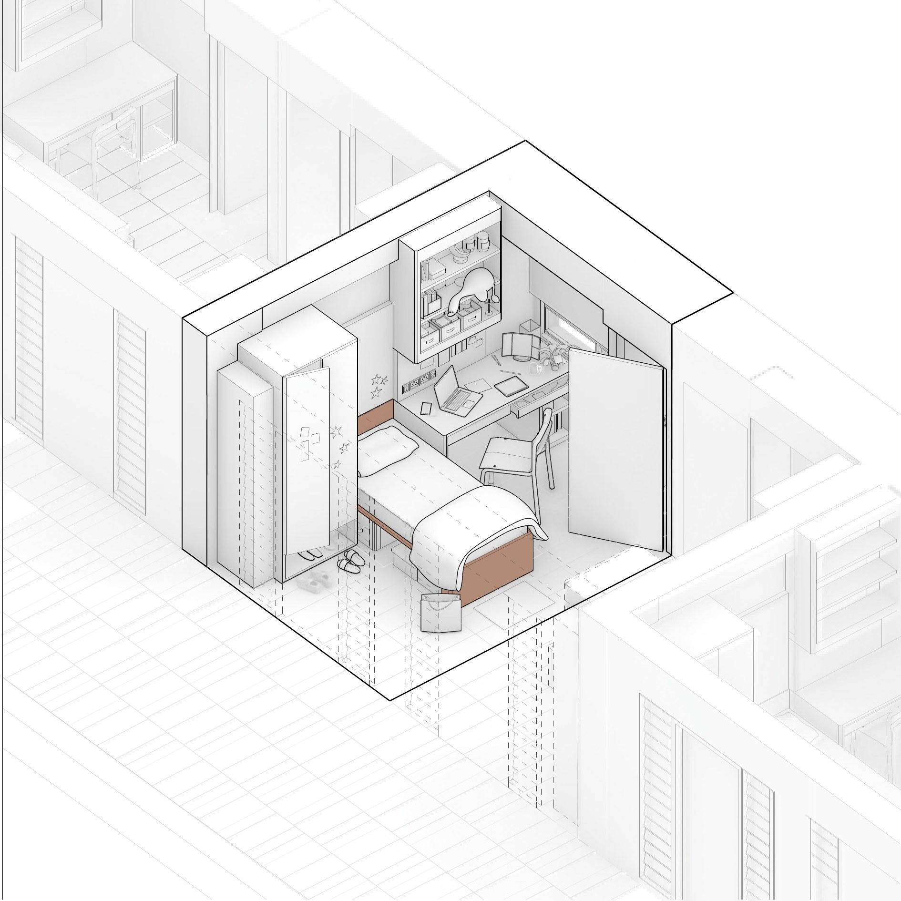
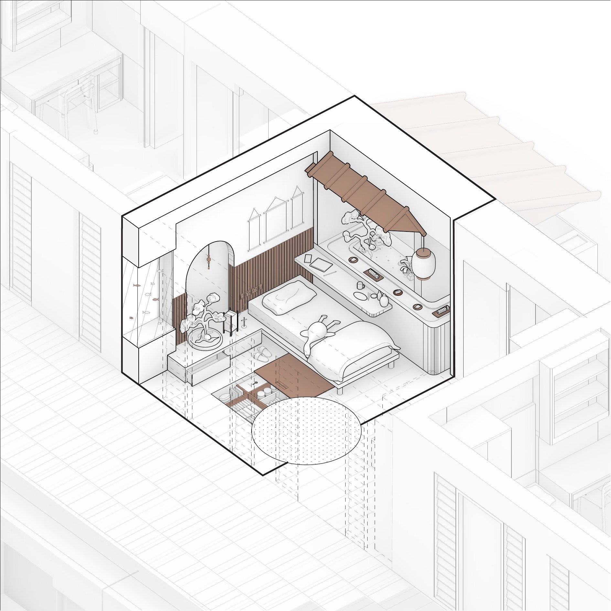

Academic Project
Room Transformation
LocationSingapore University of Technology and Design
ToolsRhino · Illustrator
Project Description
Room Transformation develops the previous floor-plan study into a three-dimensional axonometric representation. The project reimagines the existing hostel room through a fictional transformation, using spatial intervention and visual storytelling to create an alternative narrative for the interior.
Through this project, I explored ideation, axonometric drawing, and three-dimensional representation. I also developed my workflow in Rhino, particularly in generating and refining architectural linework through Make2D and rendered views.

